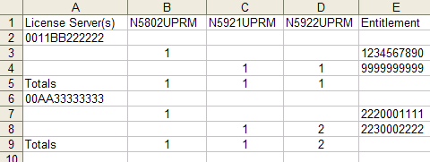

Saving comparison results
The License Renewal Comparison Tool displays the result of the comparison process using a number of tabs, for example the Matched tab. You can save the data presented in a tab in a .csv spreadsheet file.
About this task
Saving the comparison results allows you to view the .csv files in a spreadsheet software like Microsoft Excel.
Before you begin
The Comparison Tool must be running and must have completed the comparison at least once.
Procedure
Results
The result file is saved to a format that can be opened in a spreadsheet application.
Example
